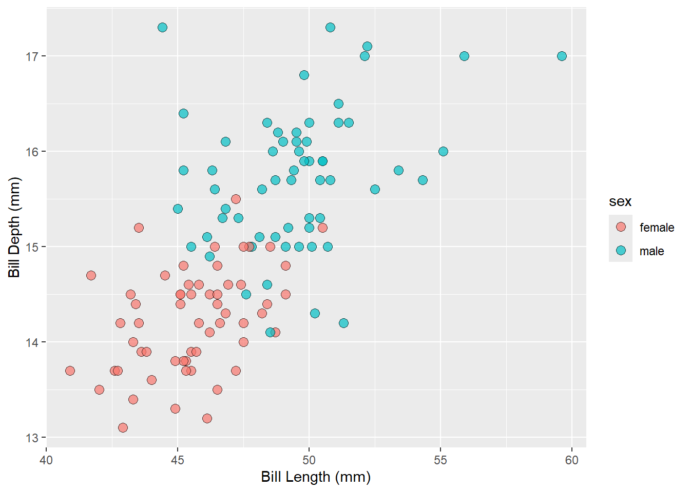

| sex | N | mean | sd | |
|---|---|---|---|---|
| female | body_mass_g | 58 | 4679.74 | 281.58 |
| bill_length_mm | 58 | 45.56 | 2.05 | |
| bill_depth_mm | 58 | 14.24 | 0.54 | |
| male | body_mass_g | 61 | 5484.84 | 313.16 |
| bill_length_mm | 61 | 49.47 | 2.72 | |
| bill_depth_mm | 61 | 15.72 | 0.74 |
Penguins
The Gentoo penguins can be found on the island(s) of: Biscoe. The total number of Gentoo penguins in the dataset is 124.
Let us analyse the Gentoo penguins by island. The results for each island are shown below.
Analysis for Biscoe

The summary statistics of penguins on Biscoe is given in Table 1 and a scatter plot of bill dimensions is shown in Figure 1.
Next, we fit a linear model to predict bill depth from bill length and sex of the penguins on Biscoe. The results are summarized below in Table 2.
| (1) | |
|---|---|
| (Intercept) | 9.954 |
| (1.070) | |
| bill_length_mm | 0.094 |
| (0.023) | |
| sexmale | 1.113 |
| (0.145) | |
| Num.Obs. | 119 |
| R2 | 0.620 |
| R2 Adj. | 0.614 |
| AIC | 226.1 |
| BIC | 237.2 |
| Log.Lik. | -109.032 |
| F | 94.811 |
| RMSE | 0.60 |